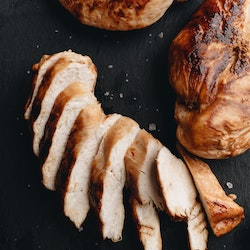

Oven-Roasted Turkey Breast!

Description
his oven-roasted turkey breast is easy to make, great for dinner, leftovers, and sandwiches. Adapted for our 2-person household from larger recipes for larger families with larger appetites.
Oven-roasted turkey breast is a lean source of protein, rich in essential amino acids that support muscle growth and repair. It's low in fat and calories, making it an excellent choice for weight management. Additionally, it's a good source of vitamins B6 and B12, which help support healthy brain function and red blood cell production.
Ingredients:
- ¼ cup butter, softened
- 1 clove garlic, minced
- 1 teaspoon paprika
- 1 teaspoon Italian seasoning
- ½ teaspoon salt-free garlic and herb seasoning blend
- salt and ground black pepper to taste
- 1 (3 pound) turkey breast with skin
- 1 teaspoon minced shallot
- 1 tablespoon butter
- 1 splash dry white wine
- 1 cup chicken stock
- 3 tablespoons all-purpose flour
- 2 tablespoons half-and-half
Steps:
- Preheat oven to 350 degrees F (175 degrees C).
- Mix together 1/4 cup butter, garlic, paprika, Italian seasoning, garlic and herb seasoning, salt, and black pepper in a bowl.
- Place turkey breast with skin side up into a roasting pan. Loosen skin with your fingers; brush half the butter mixture over the turkey breast and underneath the skin. Reserve remaining butter mixture. Tent turkey breast loosely with aluminum foil.
- Roast in the preheated oven for 1 hour; baste turkey breast with remaining butter mixture. Return to oven and roast until the juices run clear and an instant-read meat thermometer inserted into the thickest part of the breast, not touching bone, reads 165 degrees F (65 degrees C), about 30 more minutes. Let turkey breast rest 10 to 15 minutes before serving.
- While turkey is resting, transfer pan drippings to a skillet. Skim off excess grease, leaving about 1 tablespoon in skillet. Place skillet over low heat; cook and stir shallot in turkey grease until opaque, about 5 minutes
- Melt 1 tablespoon butter in skillet with shallot and whisk in white wine, scraping any browned bits of food from skillet. Whisk in chicken stock and flour until smooth. Bring to a simmer, whisking constantly, until thickened. For a creamier, lighter gravy, whisk in half-and-half.
Enjoy it!